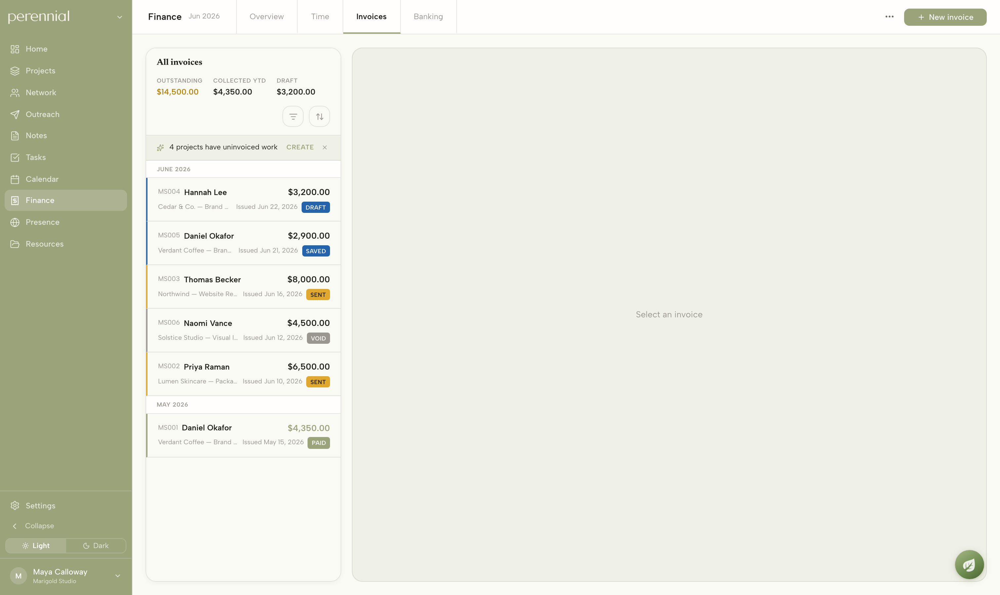
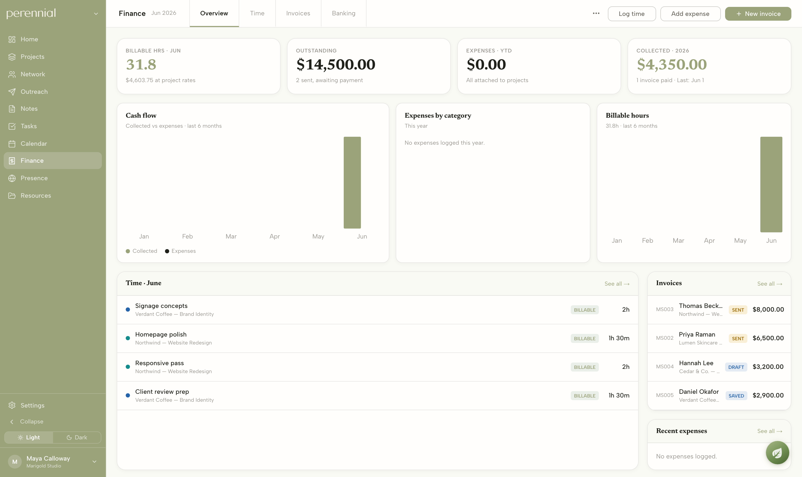
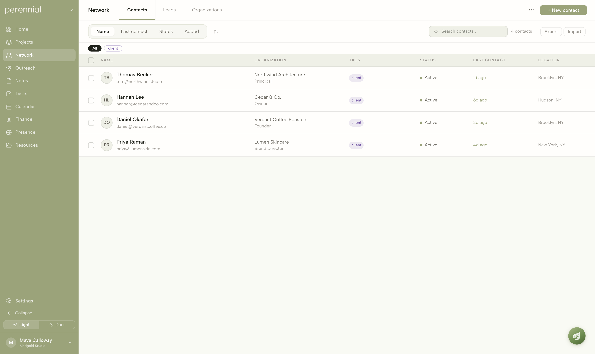

Invoicing on Stripe Connect. Every invoice carries its client, project, and status; payments land directly in the studio’s own Stripe account, and outstanding vs. collected is always current.


One connected workspace for the business behind an independent design practice — clients, projects, invoicing, banking, and outreach, designed and built end‑to‑end by one person.
Overview
Independent designers run their practice out of a dozen disconnected tools — a notes app for projects, a spreadsheet for clients, email for everything else, and a separate invoicing service that doesn’t know about any of it. I designed and built Perennial to replace that sprawl with a single, connected workspace, and shipped it on my own — from the Postgres schema to the front end.
I ran into this firsthand running Perennial, and heard the same thing from more than a dozen independent designers I spoke with: the craft is the easy part — it’s the operations that quietly eats the week.
The existing options are either too heavy — Salesforce and its kind are built for sales orgs — or too loose, like Notion, which hands you a blank canvas and makes you build the system yourself. Nothing was shaped for how a small studio actually runs: a few clients, a couple of projects at a time, invoices that need to go out, and a reputation to keep building.
Product strategy, the interviews, interaction and visual design, and full-stack engineering. The front end is Next.js (App Router) and React with TypeScript; the back end is Postgres on Supabase with row-level security, file storage, and a secrets vault. Stripe Connect handles payments, Plaid feeds in real bank transactions, and an Anthropic-powered assistant is woven through the app. It deploys continuously to Vercel. One person, every layer.
What I built
Perennial is organized so every piece knows about the others. A client connects to their projects; projects roll up time and expenses; time and expenses become invoices; invoices get paid through Stripe and reconcile against the real bank feed. The studio owner sees the whole picture in one view instead of reconciling four tools by hand.

The Home dashboard — what’s due, what’s owed, and what needs attention, pulled live from every module: notes, tasks, the calendar, finance totals, the project board, and the network. Shown with sample studio data.
The product · money

Invoicing on Stripe Connect. Every invoice carries its client, project, and status; payments land directly in the studio’s own Stripe account, and outstanding vs. collected is always current.

Bank feed via Plaid. Real transactions, auto-categorized — and matched back to the invoices that produced them.

Finance overview. Billable hours, outstanding, and collected — one honest picture of the money.
The product · work & relationships

Projects. The studio’s active work, by status, type, and priority.

Outreach. Visual pipelines for chasing press, stockists, and new business.

Network. A CRM for clients, leads, and the people around the practice.

Ash. An assistant that already has full context on the studio’s own data.
Decisions & where it stands
Most tools in this space bolt invoicing onto a CRM onto a project tracker. I modeled the studio once — clients, projects, money, and reputation as a single graph — so the dashboard shows one true picture instead of four that disagree.
Even as a single-person product in private testing, every table is scoped with row-level security, so each account’s data is isolated by default. More work up front — but going from one studio to many becomes a switch, not a rewrite.
Rather than chase feature parity with the incumbents, I kept the first version deliberately focused and coherent — and gave it an assistant that understands the whole workspace, instead of just adding more buttons.
Perennial is live at app.perennial.design and usable end to end — but still rough. Accounts are open, and I’m actively fixing bugs and smoothing edges with the first handful of people trying it. Next: hardening the experience, onboarding early studios for real, and pricing.
I can take a real problem, scope a product around it, make the calls, and ship the whole thing myself across design and engineering. The same instinct shows up in everything I do: find the disconnected mess, design the system that joins it, and build it end to end.